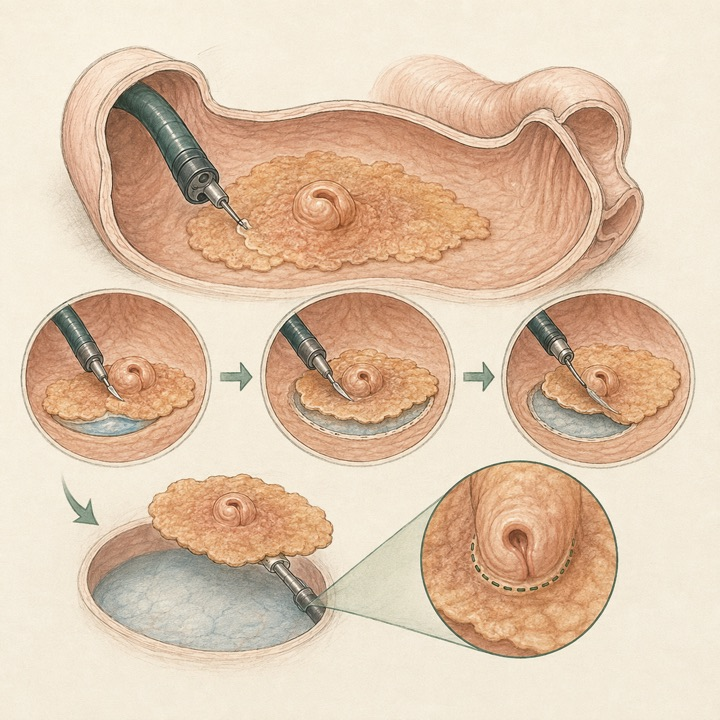
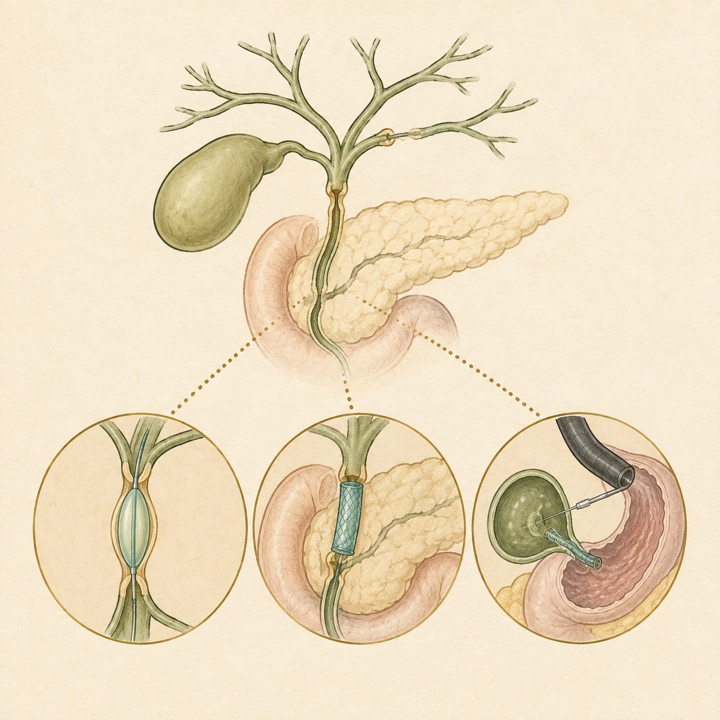
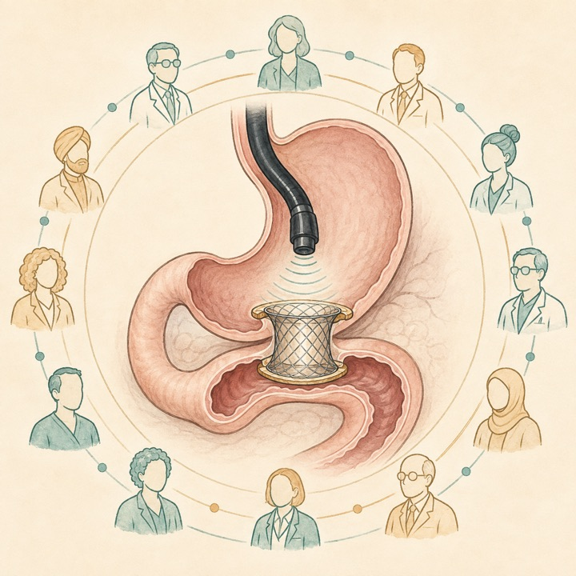
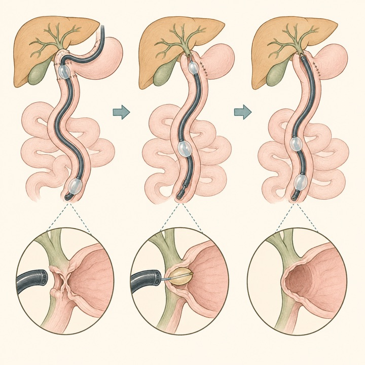
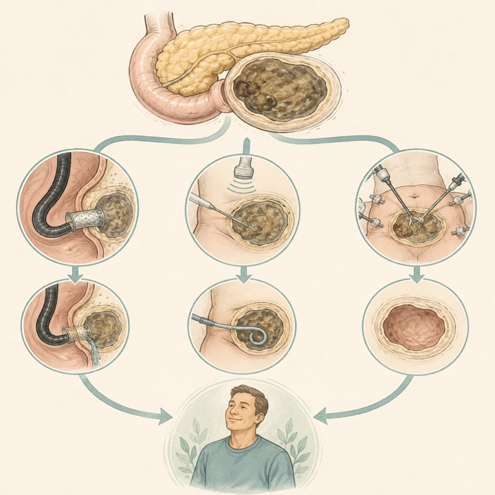
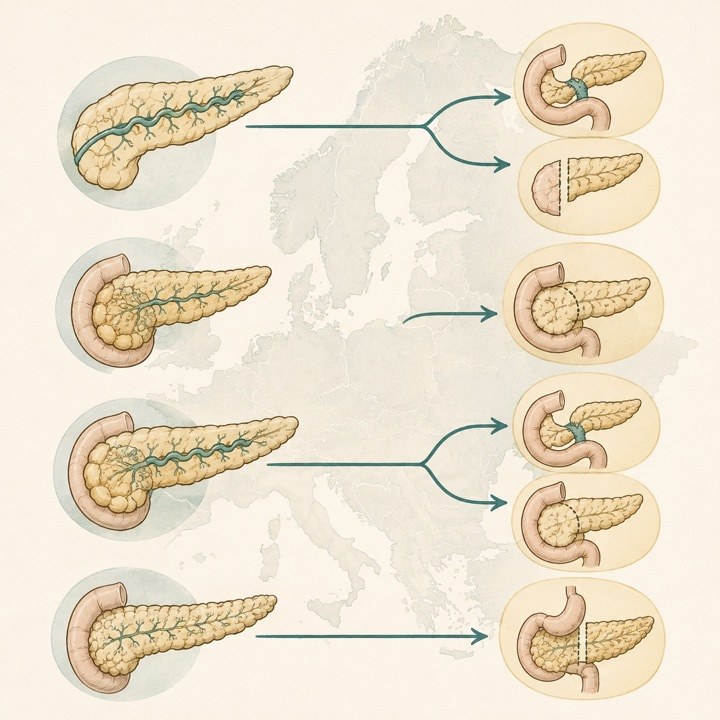
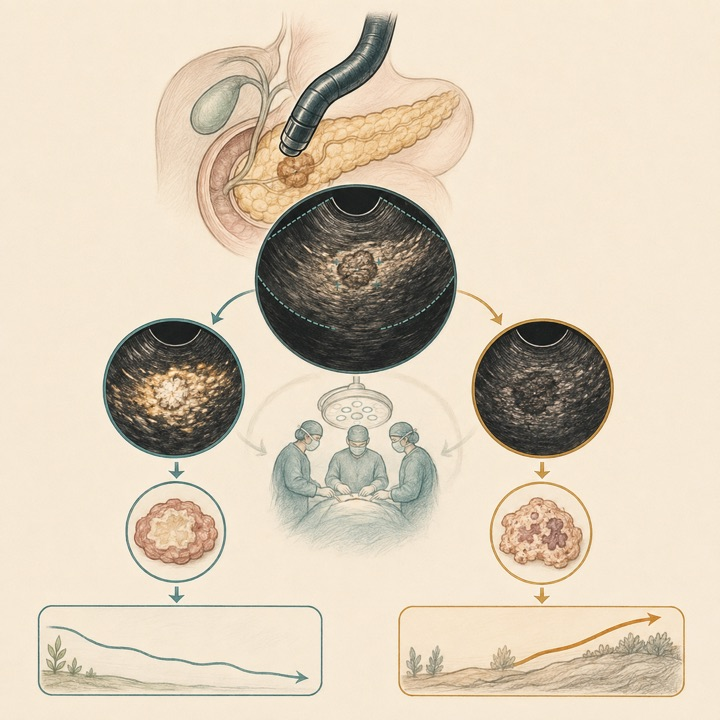
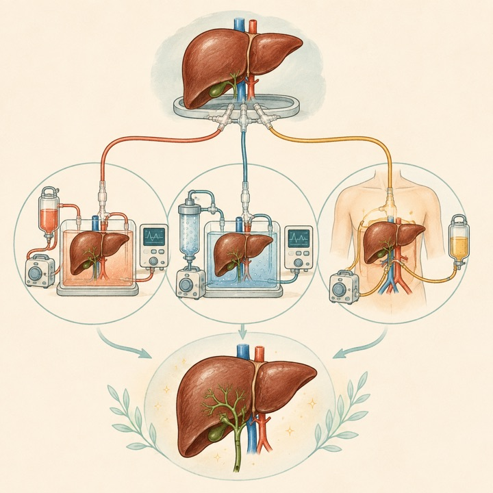

乳頭を含むESDIPは一括切除を実現、乳頭管側断端が再発リスクを規定
Endoscopy / Q1Single-center cohort
81例で施行を試み78例全例を一括切除。解析55例の3年遺残・再発は33%で、全例乳頭部に限局しました。
Tokai University Pancreatobiliary Group
This Week's Pancreatobiliary Research Highlights
最重要研究： ENDOSCOPY掲載のESDIP研究を、本班にとって重要な研究として今週の先頭に特別掲載しました（PubMed登録日は2026年8月26日）。
臨床的重要性、研究デザイン、診療への応用可能性を基準に4報を選定しました。IFとJCR quartileは2025年値（2026年公表、判明した最良カテゴリ）を参照しています。
81例で施行を試み78例全例を一括切除。解析55例の3年遺残・再発は33%で、全例乳頭部に限局しました。
PSCはバルーン拡張単独、慢性膵炎狭窄は一時的FCSEMS、ERCP不能悪性狭窄はEUS-BDを推奨・提案。
25案中20声明が合意。悪性胃出口閉塞では十二指腸ステントより耐久性と再介入率で優位と判断されました。
NRP±HOPEは非吻合部胆道狭窄が少なく、NMP単独の統計学的優位は確認されませんでした。
日本語: 2011〜2024年に乳頭を含むESD（ESDIP）を試みた連続81例のうち3例がEPまたは手術へ移行し、ESDIP完遂78例では全例一括切除でした。事前規定の除外後55例（腫瘍径中央値38 mm）で、乳頭管側断端を除く水平・垂直断端陰性87%、乳頭管側断端陰性62%、R0切除53%。追跡中央値31か月で3年局所遺残・再発累積率は33%で、全例乳頭部に限局しました。乳頭管側断端陽性/判定不能は強いリスク因子でした（HR 8.35、95%CI 2.35〜29.64）。一括切除性は高い一方、乳頭管内進展の評価と厳密な内視鏡監視が中核課題です。
English: ESDIP achieved en bloc resection in all 78 completed procedures. In 55 analyzed patients, the 3-year cumulative incidence of local residual/recurrent tumor was 33%, all confined to the papilla; a positive or indeterminate papillary duct margin strongly predicted recurrence (HR 8.35).

日本語: 良性狭窄では、胆嚢摘出後は複数本プラスチックステント、肝移植吻合部狭窄は複数本プラスチックまたは一時的FCSEMS、慢性膵炎由来は6〜12か月のFCSEMSを提案。PSCの高度狭窄はバルーン拡張単独を提案し、追加ステントは利益がなく有害事象を増やし得るとしています。悪性遠位狭窄では10 mm SEMS、切除不能例は内視鏡的減圧を優先。ERCP不能・失敗時はPTBDよりEUS-BDを推奨しています。多くは条件付き提案で、解剖・病因・施設経験による個別化が必要です。
English: The ESGE guideline aligns stent choice with etiology and anatomy, favors balloon dilation alone for high-grade PSC strictures, and recommends EUS-BD over PTBD after failed or unfeasible ERCP for malignant strictures.

日本語: 国際66専門家が修正Delphi法で25声明を評価し、20声明（GRADE 6、コンセンサス14）が85%以上の合意に到達しました。悪性胃出口閉塞では耐久性と再介入の少なさから十二指腸ステントよりEUS-GEを推奨し、同等の有効性と全有害事象の少なさから外科的バイパスより提案。専門施設要件、監督下訓練、標的腸管拡張、freehand LAMS留置、誤留置対応なども規定しました。腹膜播種、抗菌薬予防、気管挿管などは正式推奨に至らず、実施は高経験施設に限るべきです。
English: Twenty of 25 statements reached consensus. For malignant gastric outlet obstruction, EUS-GE was favored over duodenal stenting and suggested over surgical bypass, while unresolved questions emphasize expert-center implementation.

日本語: 6研究386例を統合し、DBE-ERCPの技術成功率は86%（95%CI 79〜92%）。技術成功346例で臨床成功78%（63〜88%）、有害事象15%（5〜36%）、5研究220例で再発36%（22〜52%）でした。再建腸管の低侵襲治療として高い到達・治療成功を示す一方、長期再狭窄は少なくなく、研究数の少なさと不均一性を踏まえた専門施設での運用が必要です。
English: DBE-ERCP achieved 86% technical and 78% clinical success, but recurrence reached 36%. It is a valuable minimally invasive option in altered anatomy, with limited long-term evidence.

日本語: SAGES/AHPBAの多職種パネルが2020〜2025年の系統的レビューを基に、内視鏡、画像ガイド下介入、低侵襲手術、開腹手術、step-upを比較しました。内視鏡対画像ガイド下、画像ガイド下対開腹、低侵襲手術対各介入などはいずれも条件付き推奨で、純内視鏡アプローチとstep-upはどちらも選択可能としました。すべての推奨の確実性が非常に低く、感染、位置、成熟度、臓器不全、局所専門性を統合した多職種判断が不可欠です。
English: Multiple minimally invasive pathways are conditionally acceptable for symptomatic WON, but every recommendation rests on very-low-certainty evidence. Anatomy, infection, timing, and local expertise should drive multidisciplinary selection.

日本語: ESCOPA前向き研究の術後解析で、13か国22施設の症候性慢性膵炎手術207例を膵管拡張、膵頭腫大、両者併存、小膵管病に分類しました。90日死亡1.4%、6か月疼痛改善72.6%。ガイドライン準拠手術は66%でしたが、非準拠群と比べ主要合併症、死亡、疼痛改善に有意差はありませんでした。形態ごとの術式選択は大きくばらつき、特に小膵管病の切除・V字切開の位置づけを明確にした統一指針が必要です。
English: Across 207 operations, guideline-concordant surgery did not improve short-term morbidity or 6-month pain relief. Wide morphology-specific practice variation supports clearer unified recommendations rather than a single preferred operation.

日本語: 術前化学療法、手術、術後化学療法を受けた切除可能膵癌52例で、治療前CH-EUSの20、40、60秒造影パターンを評価しました。低造影は全時相で病理学的奏効率が低く、20秒低造影群の無再発生存中央値は560日対1,296日。多変量解析でも20秒低造影は短い無再発生存と関連しました（HR 2.49、95%CI 1.01〜6.09）。小規模後ろ向き研究であり、治療変更に用いるには外部前向き検証が必要です。
English: Pretreatment hypoenhancement on CH-EUS predicted poorer pathological response and shorter recurrence-free survival, particularly at 20 seconds (adjusted HR 2.49). Prospective external validation is needed before treatment allocation.

日本語: 5か国30超施設、2014〜2024年の機械灌流DCD肝移植1,538例（65%がベンチマーク外高リスク）を比較しました。ベンチマーク内の非吻合部胆道狭窄はupfront NMP、back-to-base NMPとも14%に対し、NRP 1%、NRP＋HOPE 2%。高リスク群でもNRP＋HOPE 2%、NRP 4%、back-to-base NMP 18%でした。調整解析でNRP±HOPEは胆道狭窄低減と関連しましたが、NMP単独は標準冷保存に対する統計学的低減を示しませんでした。無作為比較ではなく地域・時代差を残します。
English: In 1,538 DCD liver transplants, NRP with or without HOPE was associated with fewer nonanastomotic biliary strictures. NMP-based preservation alone did not show a statistically significant reduction versus benchmark static cold storage.

ClinicalTrials.gov公式APIを2026年9月6日に検索し、8月31日〜9月6日に新規公開された直接関連研究12件と、診療・開発上重要な更新10件を選択しました。一般固形癌、PBC、嚢胞性線維症、糖尿病、無関係なEUS略語、支持療法のみの低優先度記録は除外しています。JRCTは検索していません。
| 新規｜IgG4-RD | NCT07793903 難治・再発IgG4関連疾患に対するBCT301 2026-08-31公開 / 6例 / Not yet recruiting。 |
|---|---|
| 新規｜肝門部胆管癌 | NCT07795619 / HCCANANO-HOPE1 化学療法後の局所進行切除不能肝門部胆管癌に対するIRE 2026-08-31公開 / 60例 / Recruiting。 |
| 新規｜膵切除 | NCT07796997 / GI-06 部分膵切除周術期hydrocortisone 2026-09-01公開 / 第I相 / 20例 / Not yet recruiting。 |
| 新規｜胆道癌 | NCT07797816 nal-IRI＋5-FU/LV＋sintilimabと逐次SBRT 2026-09-01公開 / 第II相 / 31例 / Recruiting。 |
| 新規｜左膵切除 | NCT07799298 / SPLENDID PDAC左膵切除における脾温存対脾摘 2026-09-02公開 / 360例 / Not yet recruiting。 |
| 新規｜胆道拡張症 | NCT07800169 小児総胆管嚢腫術後回復因子の多施設解析 2026-09-02公開 / 550例 / Completed。 |
| 新規｜局所進行膵癌 | NCT07799935 化学療法後の不可逆電気穿孔法（IRE） 2026-09-02公開 / 60例 / Recruiting。 |
| 新規｜進行膵癌 | NCT07802418 分子プロファイルに基づく個別化治療 2026-09-03公開 / 第II相 / 1,200例 / Not yet recruiting。 |
| 新規｜転移性PDAC | NCT07803783 Gemcitabine系治療後YL201対標準化学療法 2026-09-04公開 / 第III相 / 320例 / Not yet recruiting。 |
| 新規｜重症化予測AP | NCT07803965 重症化予測急性膵炎に対するSGC001 2026-09-04公開 / 第II相 / 129例 / Not yet recruiting。 |
| 新規｜EUS-AI | NCT07803770 EUS画像AIによる膵癌転帰予測 2026-09-04公開 / 700例 / Not yet recruiting。 |
| 新規｜早期PDAC | NCT07805681 血液バイオマーカー検査の臨床的影響レジストリ 2026-09-04公開 / 400例 / Not yet recruiting。 |
| 更新｜PSC | NCT07387549 elafibranor第III相 2026-08-31更新 / 350例 / Recruiting。 |
| 更新｜PSC | NCT05627362 elafibranor第II相 2026-08-31更新 / 68例 / Active, not recruiting。 |
| 更新｜転移性PDAC | NCT07573215 daraxonrasib拡大アクセス 2026-09-01更新 / Approved for marketing。 |
| 更新｜進行PDAC | NCT05685602 CA-4948＋標準化学療法 2026-09-01更新 / 第I相 / 43例 / Suspended。 |
| 更新｜境界切除可能PDAC | NCT02676349 / PANDAS-PRODIGE 44 mFOLFIRINOX±術前化学放射線療法 2026-09-01更新 / 第II相 / 130例 / Completed。 |
| 更新｜FGFR2胆管癌 | NCT05727176 進行胆管癌に対するfutibatinib 2026-09-01更新 / 第II相 / 120例 / Recruiting。 |
| 更新｜一次治療PDAC | NCT07490301 telisotuzumab adizutecan＋FOLFOX対標準治療 2026-09-01更新 / 第II/III相 / 900例 / Recruiting。 |
| 更新｜転移性PDAC | NCT06608927 quemliclustat＋化学療法対プラセボ 2026-09-02更新 / 第III相 / 610例 / Active, not recruiting。 |
| 更新｜BRCA/PALB2 PDAC | NCT04493060 niraparib＋dostarlimab 2026-09-03更新 / 第II相 / 22例 / Completed。 |
| 更新｜切除可能iCCA | NCT06050252 術前durvalumab＋Gem/Cis 2026-09-04更新 / 第II相 / 27例 / Suspended。 |
PubMedの2026年8月31日〜9月6日EDATに加え、Nature Reviews Gastroenterology & Hepatology、The Lancet Gastroenterology & Hepatology、Gastroenterology、Gut、Clinical Gastroenterology and Hepatology、Annals of Surgery、Journal of Hepato-Biliary-Pancreatic Sciences、Gastrointestinal Endoscopy、Endoscopy、Surgical Endoscopy、Endoscopy International Open、VideoGIE、Clinical Endoscopy、Digestive Endoscopy、DEN Open、iGIEの公式サイト・誌面一覧またはDOI解決先を確認しました。ESDIP研究（PMID 42648706）は本班にとって重要な研究として、対象期間前の2026年8月26日PubMed登録であることを明示した上で特別掲載しました。速報段階・ahead of printでは情報が更新されることがあります。
2026年8月24日〜8月30日版
2026年8月17日〜8月23日版
2026年8月10日〜8月16日版
2026年8月3日〜8月9日版
2026年7月27日〜8月2日版
2026年7月20日〜7月26日版
2026年7月13日〜7月19日版
2026年7月6日〜7月12日版
医療従事者向け情報： 本ページは医師・医学生・研究者向けの文献整理であり、患者向け広告、診療ガイドライン、個別の診断・治療助言ではありません。掲載内容は公開時点の情報に基づき、原著論文・最新ガイドライン・各施設の方針をご確認ください。